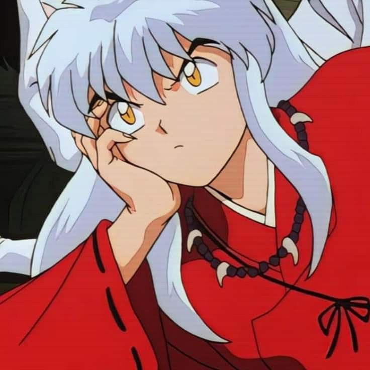
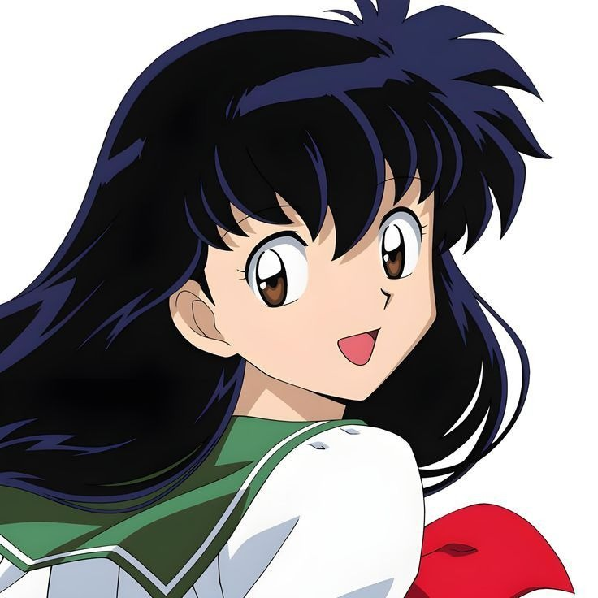
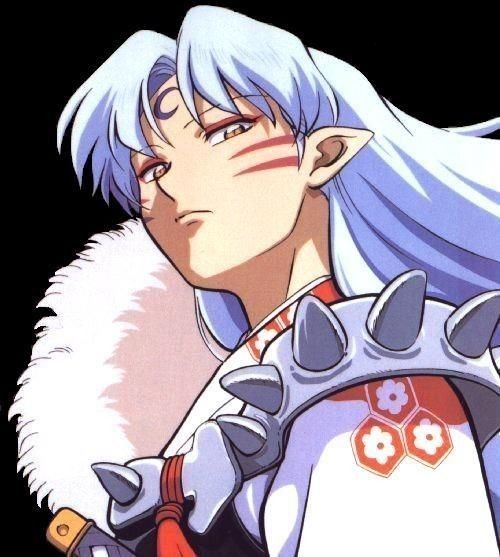
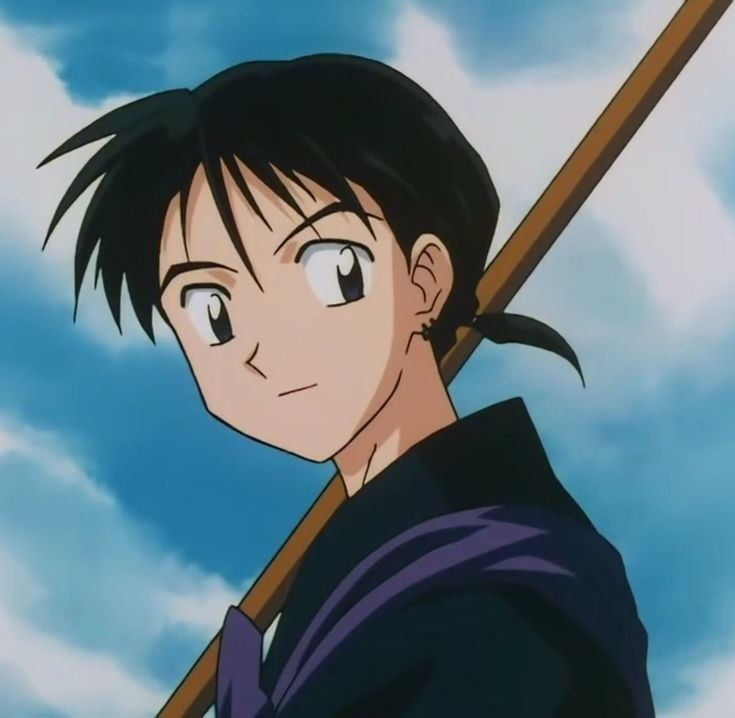
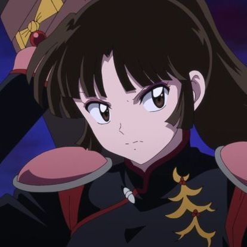

Sobre o Anime
*Inuyasha* é um anime clássico criado por Rumiko Takahashi. A obra mistura fantasia, folclore japonês, batalhas emocionantes e relações profundas entre seus personagens. Parte da história se passa no Japão Feudal, um período onde demônios, espíritos e artefatos místicos coexistiam com humanos.
O anime é marcado por aventuras cheias de emoção, evolução pessoal, crescimento dos laços afetivos e dilemas internos que constroem uma narrativa rica e encantadora. Também explora temas como coragem, destino, responsabilidade e a convivência entre mundos diferentes.
História
A história começa quando Kagome Higurashi, uma garota que vive no Japão moderno, é misteriosamente transportada para o Período Feudal. Lá ela encontra Inuyasha, um meio-demônio inicialmente hostil, mas extremamente poderoso.
Após a Joia de Quatro Almas ser quebrada, os dois embarcam em uma jornada para recuperar seus fragmentos. No caminho, encontram aliados e inimigos com motivações complexas, e cada encontro molda o destino do mundo.
A busca pelos fragmentos se torna mais do que uma missão — é uma trajetória de amadurecimento, conexão e descoberta.
Personagens Principais

Inuyasha
Inuyasha é um meio-demônio que vive dividido entre dois mundos. Impulsivo e direto, ele busca provar sua força enquanto descobre seu valor além da linhagem demoníaca. É dono da Tessaiga, uma espada lendária capaz de técnicas devastadoras. Apesar de sua postura rígida, possui um lado protetor e sensível, principalmente com aqueles que ama.

Kagome Higurashi
Kagome (melhor personagem do anime) é uma garota moderna com fortes poderes espirituais. Sua bondade, coragem e determinação fazem dela o coração emocional do grupo. Além de purificar fragmentos da joia, ela equilibra razão e emoção, crescendo ao longo da jornada enquanto aprende mais sobre si e o passado ao qual foi ligada.

Sesshomaru
Sesshomaru é um demônio completo, elegante e extremamente poderoso. Inicialmente distante e indiferente aos humanos, ele possui uma jornada marcada por questionamentos sobre honra, propósito e sentimento. Sua presença é marcada por força absoluta, sabedoria e um desenvolvimento silencioso, porém profundo.

Miroku
Miroku é um monge habilidoso com técnicas espirituais avançadas. Perspicaz, sábio e observador, ele serve como equilíbrio estratégico no grupo. Seu passado carrega responsabilidades importantes e desafios que moldam sua determinação.

Sango
Sango é uma caçadora de demônios extremamente treinada e dona do poderoso Hiraikotsu. Corajosa, leal e emocionalmente forte, ela luta para proteger aqueles que ama enquanto enfrenta conflitos pessoais intensos. Sua força é tanto física quanto emocional.